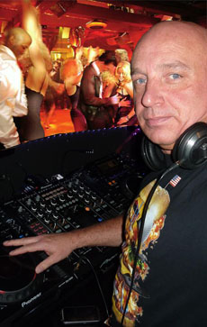
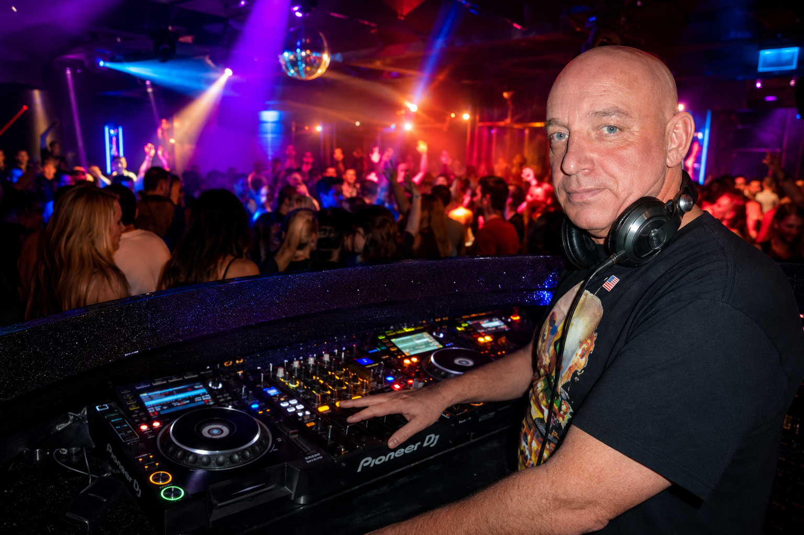

Club Setup
Two CDJs and a mixer are enough to build a powerful, seamless and crowd-driven set.
Introducing
Tech house. Tribal. Groove. Club music. A Rotterdam DJ delivering high-energy sets built for the dance floor.

Live in RotterdamFrom Rotterdam to the dance floor
John Ditch started spinning records at the age of fifteen, performing at small parties with his own equipment before becoming a resident DJ at clubs throughout Rotterdam.
Today, he continues to play at popular clubs and events, bringing together tech house, tribal, groove and club music in energetic, crowd-focused sets.
An all-round DJ with years of experience, John can adapt to any club, festival or private event. Whether the setup includes computers, CDJs, grooveboxes or a simple mixer, the objective stays the same: make the room move.

John Ditch in his element—mixing energetic club sounds, reading the crowd, and keeping the dance floor moving all night.
DJ or artist?
John Ditch combines the instinct of a DJ with the creativity and freedom of a live artist.
Grooveboxes, drum machines, computers, CD players, keyboards, vinyl, singers, MCs and even his own voice can all become part of the performance. The venue may determine the tools, but it never determines the energy.
“It is not the electronics that make the floor go wild. It is the DJ — the artist.”
Flexible performance setup
Two CDJs and a mixer are enough to build a powerful, seamless and crowd-driven set.
Computers, controllers, grooveboxes and drum machines add live elements and new creative possibilities.
Musicians, vocalists and MCs can become part of a unique performance shaped around the venue and event.
DJs move crowds, create music and headline festivals worldwide.
John’s musical range moves from R&B and club classics to tech house, tribal, progressive and hardstyle. Whatever the setting, the beats keep pumping.
Bookings & enquiries
For clubs, private parties and festivals, contact Manager SerGeant or send an email directly.
jvanderkuijl@ziggo.nl Send booking requestPhone: +31 6 43 47 87 95